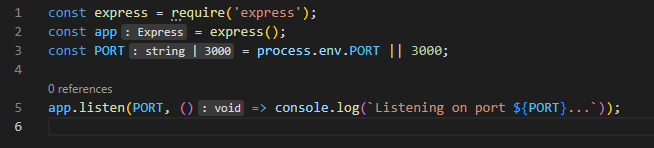
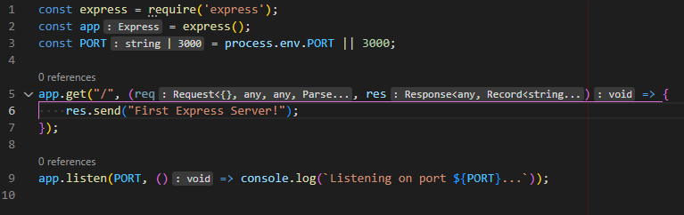

The basics of JavaScript and Node.js have been explained in the Introduction section. This section will focus on setting up a Node.js Express Server.
First of all, Node.js needs to be installed. The download page can be found here. After Node.js is correctly installed and configured, open a terminal in an empty folder named after your project and type:
npm initThe command allows you to set some details about your project, that will be saved in a "package.json" file inside the folder.
In order to use express, the dependency needs to be added to your project. Apart form saving the project's information, the "package.json" file also saves the dependencies you want to use in your project and declares scripts that define the commands used to start or test your program in different environments such as development or production.
To add express, you just have to type:
npm i express
The dependency will be added and all the required libraries will be downloaded in a separate folder called "node_modules".
Another important dependency used primarily for development purposes is nodemon. It allows your app to automatically restart when you change something in your code.
To add nodemon as a development dependency, you just have to type:
npm i --save-dev nodemon
Now you have to create the entry point of your application, either the default ("index.js") or the main file you decided to set as entry point
during the npm init command.
By adding the following lines to your file, you import express in line 1, and initialize the import in line 2. Line 3 defines a port, either a predefined one, or a port
already defined in your environment. The last line allows the application to listen for all requests coming trough the specified port. By default, it will respond with an
error message, if no other behaviour is specified.

To allow the server to respond to certain requests in certain ways, the following modifications need to be made.

To get information from the request, we can either parse the request body, or the request parameters:
If the values send with the request are valid, then the user is redirected to a login state, otherwise back to the login page.
Here only lines 10 and 11 change, so that the values are taken from the paramteres encoded in the url.